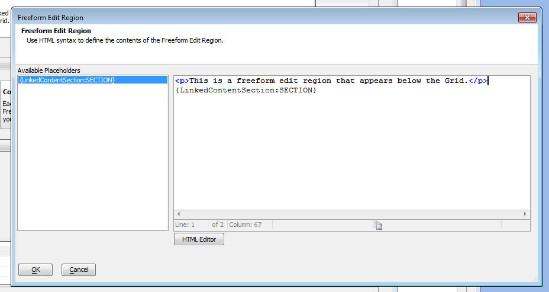

Linked Content Sections
Linked Content Sections allow you to display linked data in your Grid.
The linked content is displayed in a Tab or Accordion control if the Linked Content Section links more than one object. Linked Content Sections essentially duplicate the functionality of the Tabbed Grid Linker component and the Grid Linker component (from V9 and prior version). But because Linked Content Sections use Ajax, they don't have the performance penalty that Tabbed Grid Linkers and Grid Linkers have. You can place as many Linked Content Sections on your Grid as you want. For example, you might have a Customer Grid with a Linked Content Section below the Grid that displays an Orders Grid (showing orders for the selected Customer) and a Payments Grid (showing payments received from the selected Customer). These two Grids would be displayed in a Tab or Accordion control. Then, you might have another Grid (displayed, say, to the right of the Customer Grid) showing a list of all documents/letters/proposals, etc. that have been sent to the selected customer. NOTE: At present, you can only place Grids in Linked Content Sections. We will add .a5w pages and other web pages in the future.
The image below shows the Customer Grid with a Linked Content Section showing the Orders Grid. This Grid, in-turn, has its own Linked Content Section which shows the Order Details Grid.

How to Place Linked Content In the Grid
To place Lined Content into the Grid, check the 'Has linked Grids or other content' checkbox and then click on the smart field. The following dialog is displayed.
You can add add many Linked Content sections as you want.
Click the 'Add Linked Content Section' button and give the section any arbitrary name that you want.
Then, click the 'Define Linked Content' button to define the linked content.

After you have defined the linked content, you must then specify where on the Grid the linked content should appear. You do this by placing a special placeholder in one of the Grid's freeform edit regions.
To place the linked content, click the 'Edit Freeform Edit Region' button and select which freeform edit region you want to use.
Then, insert the placeholder into the freeform html.

Release notes
Grid Component - Linked Content Sections - Master Template - You can now place Linked Content Sections in the Master Template. Previously, Linked Content Sections could only be placed in a Free-form edit region. The benefit of placing Linked Content Sections in the Master Template is that you get smoother repainting of the Linked Content when the parent Grid is navigated, searched, or sorted.
Limitations
HTML Memo Editor - Linked Content Section - Important Limitation - If you are displaying a Grid component in a Linked Content Section, and if the child Grid contains a pop-up HTML memo editor, the Linked Content Grid must be placed in the Master Template or a Search Part free-form edit region. The HTML editor will not function correctly if the Linked Content is placed in the Grid part's or Detail View part's free-form edit region.